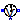
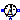
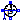
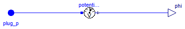
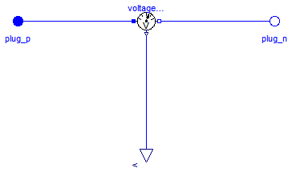
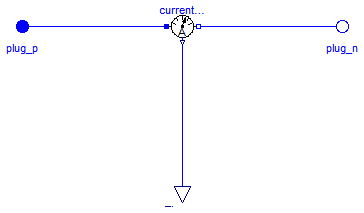
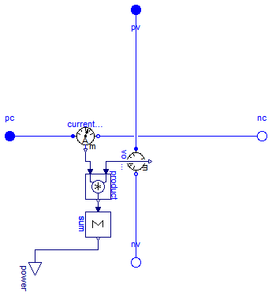

This package contains multiphase potential, voltage, and current sensors.
Extends from Modelica.Icons.SensorsPackage (Icon for packages containing sensors).
| Name | Description |
|---|---|
| PotentialSensor | Multiphase potential sensor |
|  VoltageSensor | Multiphase voltage sensor |
|  CurrentSensor | Multiphase current sensor |
|  PowerSensor | Multiphase instantaneous power sensor |

Contains m potential sensors (Modelica.Electrical.Analog.Sensors.PotentialSensor), thus measuring the m potentials phi[m] of the m pins of plug_p.
Extends from Modelica.Icons.RotationalSensor (Icon representing a round measurement device).
| Type | Name | Default | Description |
|---|---|---|---|
| Integer | m | 3 | Number of phases |
| Type | Name | Description |
|---|---|---|
| PositivePlug | plug_p | |
| output RealOutput | phi[m] | Absolute voltage potential as output signal |
model PotentialSensor "Multiphase potential sensor" extends Modelica.Icons.RotationalSensor; parameter Integer m(final min=1) = 3 "Number of phases";Interfaces.PositivePlug plug_p(final m=m); Modelica.Blocks.Interfaces.RealOutput phi[m] "Absolute voltage potential as output signal"; Modelica.Electrical.Analog.Sensors.PotentialSensor potentialSensor[m]; equationconnect(potentialSensor.p, plug_p.pin); connect(potentialSensor.phi, phi); end PotentialSensor;

Contains m voltage sensors (Modelica.Electrical.Analog.Sensors.VoltageSensor), thus measuring the m potential differences v[m] between the m pins of plug_p and plug_n.
Extends from Modelica.Icons.RotationalSensor (Icon representing a round measurement device).
| Type | Name | Default | Description |
|---|---|---|---|
| Integer | m | 3 | Number of phases |
| Type | Name | Description |
|---|---|---|
| PositivePlug | plug_p | |
| NegativePlug | plug_n | |
| output RealOutput | v[m] | Voltage between pin p and n (= p.v - n.v) as output signal |
model VoltageSensor "Multiphase voltage sensor" extends Modelica.Icons.RotationalSensor; parameter Integer m(final min=1) = 3 "Number of phases";Interfaces.PositivePlug plug_p(final m=m); Interfaces.NegativePlug plug_n(final m=m); Modelica.Blocks.Interfaces.RealOutput v[m] "Voltage between pin p and n (= p.v - n.v) as output signal"; Modelica.Electrical.Analog.Sensors.VoltageSensor voltageSensor[m]; equationconnect(voltageSensor.n, plug_n.pin); connect(voltageSensor.p, plug_p.pin); connect(voltageSensor.v, v); end VoltageSensor;

Contains m current sensors (Modelica.Electrical.Analog.Sensors.CurrentSensor), thus measuring the m currents i[m] flowing from the m pins of plug_p to the m pins of plug_n.
Extends from Modelica.Icons.RotationalSensor (Icon representing a round measurement device).
| Type | Name | Default | Description |
|---|---|---|---|
| Integer | m | 3 | Number of phases |
| Type | Name | Description |
|---|---|---|
| PositivePlug | plug_p | |
| NegativePlug | plug_n | |
| output RealOutput | i[m] | current in the branch from p to n as output signal |
model CurrentSensor "Multiphase current sensor" extends Modelica.Icons.RotationalSensor; parameter Integer m(final min=1) = 3 "Number of phases";Interfaces.PositivePlug plug_p(final m=m); Interfaces.NegativePlug plug_n(final m=m); Modelica.Blocks.Interfaces.RealOutput i[m] "current in the branch from p to n as output signal"; Modelica.Electrical.Analog.Sensors.CurrentSensor currentSensor[m]; equationconnect(plug_p.pin, currentSensor.p); connect(currentSensor.n, plug_n.pin); connect(currentSensor.i, i); end CurrentSensor;

This power sensor measures instantaneous electrical power of a multiphase system and has a separated voltage and current path. The plugs of the voltage path are pv and nv, the plugs of the current path are pc and nc. The internal resistance of each current path is zero, the internal resistance of each voltage path is infinite.
| Type | Name | Default | Description |
|---|---|---|---|
| Integer | m | 3 | Number of phases |
| Type | Name | Description |
|---|---|---|
| PositivePlug | pc | Positive plug, current path |
| NegativePlug | nc | Negative plug, current path |
| PositivePlug | pv | Positive plug, voltage path |
| NegativePlug | nv | Negative plug, voltage path |
| output RealOutput | power |
model PowerSensor "Multiphase instantaneous power sensor" parameter Integer m(min=1) = 3 "Number of phases";MultiPhase.Interfaces.PositivePlug pc(final m=m) "Positive plug, current path"; MultiPhase.Interfaces.NegativePlug nc(final m=m) "Negative plug, current path"; MultiPhase.Interfaces.PositivePlug pv(final m=m) "Positive plug, voltage path"; MultiPhase.Interfaces.NegativePlug nv(final m=m) "Negative plug, voltage path"; Modelica.Blocks.Interfaces.RealOutput power; MultiPhase.Sensors.VoltageSensor voltageSensor(final m=m); MultiPhase.Sensors.CurrentSensor currentSensor(final m=m); Modelica.Blocks.Math.Product product[m]; Modelica.Blocks.Math.Sum sum(final nin=m, final k=ones(m)); equationconnect(pc, currentSensor.plug_p); connect(currentSensor.plug_n, nc); connect(voltageSensor.plug_p, pv); connect(voltageSensor.plug_n, nv); connect(currentSensor.i, product.u2); connect(product.u1, voltageSensor.v); connect(product.y, sum.u); connect(sum.y, power); end PowerSensor;